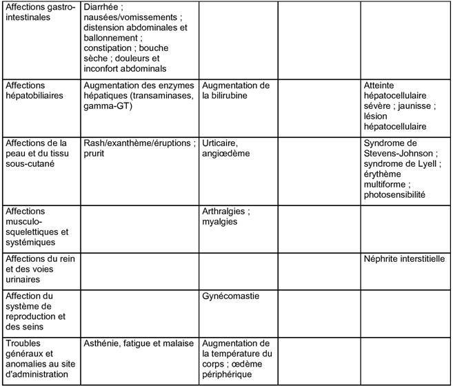

RÉSUMÉ DES CARACTÉRISTIQUES DU PRODUIT
ANSM - Mis à jour le : 25/03/2014
PANTOPRAZOLE TEVA 20 mg, comprimé gastro-résistant
2. COMPOSITION QUALITATIVE ET QUANTITATIVE
Chaque comprimé gastro-résistant contient 20 mg de pantoprazole (sous forme de pantoprazole sodique sesquihydraté).
Excipients:
Chaque comprimé de PANTOPRAZOLE TEVA 20 mg contient 18 mg de sorbitol.
Pour la liste complète des excipients, voir rubrique 6.1.
Comprimé gastro-résistant.
Comprimé brun jaune clair, ovale et légèrement biconvexe.
4.1. Indications thérapeutiques
Adultes et enfants de 12 ans et plus
Traitement symptomatique du reflux gastro-œsophagien.
Traitement d'entretien et prévention des récidives d'œsophagites par reflux gastro-œsophagien.
Adultes
Prévention des ulcères gastro-duodénaux induits par les anti-inflammatoires non stéroïdiens non sélectifs (AINS) chez les patients à risque pour lesquels un traitement anti-inflammatoire doit être poursuivi (voir rubrique 4.4.).
4.2. Posologie et mode d'administration
Les comprimés ne doivent pas être croqués ni écrasés et doivent être pris entiers 1 heure avant un repas avec un peu d'eau.
Posologie recommandée:
Adultes et enfants de 12 ans et plus:
Traitement symptomatique du reflux gastro-œsophagien
La dose recommandée est de 1 comprimé gastro-résistant de PANTOPRAZOLE TEVA 20 mg par jour. La disparition des symptômes est généralement obtenue en deux à quatre semaines. Si cela n'est pas suffisant, la cicatrisation sera normalement obtenue en quatre semaines supplémentaires. Après disparition des symptômes, la récidive des symptômes peut être contrôlée par la prise à la demande de 20 mg une fois par jour. Un traitement continu peut être envisagé en cas de contrôle non satisfaisant des symptômes par un traitement à la demande.
Traitement d'entretien et prévention des récidives des œsophagites par reflux gastro-œsophagien
Dans le traitement d'entretien, la dose recommandée est de 1 comprimé gastro-résistant de PANTOPRAZOLE TEVA 20 mg par jour, avec une augmentation à 40 mg de pantoprazole par jour en cas de récidive. PANTOPRAZOLE TEVA 40 mg peut être utilisé dans ce cas. Après cicatrisation, la dose sera ramenée à 20 mg par jour.
Adultes
Prévention des ulcères gastro-duodénaux induits par les anti-inflammatoires non stéroïdiens non sélectifs (AINS) chez les patients à risque pour lesquels un traitement anti-inflammatoire doit être poursuivi
La dose recommandée est de 1 comprimé gastro-résistant par jour de PANTOPRAZOLE TEVA 20 mg.
Populations particulières
Enfants de moins de 12 ans:
PANTOPRAZOLE TEVA n'est pas recommandé chez l'enfant de moins de 12 ans en raison de données insuffisantes sur la sécurité et l'efficacité dans cette classe d'âge.
Sujets âgés et Insuffisants rénaux
La dose journalière de 40 mg de pantoprazole ne doit pas être dépassée chez ces patients.
Insuffisants hépatiques
La dose journalière de 20 mg de pantoprazole ne doit pas être dépassée chez les patients insuffisants hépatiques sévères (voir rubrique 4.4.).
Insuffisants rénaux
Aucun ajustement de la posologie n'est nécessaire chez les patients insuffisants rénaux.
Personnes âgées
Aucun ajustement de la posologie n'est nécessaire chez les patients âgés.
Hypersensibilité au pantoprazole, aux benzimidazoles substitués, au sorbitol ou à l'un des excipients.
4.4. Mises en garde spéciales et précautions d'emploi
Chez les insuffisants hépatiques sévères, les taux d'enzymes hépatiques doivent être contrôlés régulièrement pendant le traitement par pantoprazole, particulièrement les traitements à long terme. Si les taux d'enzymes hépatiques deviennent élevés, le traitement par pantoprazole devra être arrêté (voir rubrique 4.2.).
Administration concomitante avec les AINS
L'utilisation de PANTOPRAZOLE TEVA 20 mg comme traitement préventif des ulcères gastro-duodénaux induits par les anti-inflammatoires non stéroïdiens non sélectifs (AINS) devraient être limitée aux patients chez lesquels un traitement par AINS doit être poursuivi et qui présentent un risque accru de développer des complications gastro-intestinales. Le risque accru doit être évalué selon les facteurs de risques individuels tels que l'âge (> 65 ans), les antécédents d'ulcère gastro-duodénal ou d'hémorragie gastro-intestinale haute.
En présence de symptômes anormaux
En présence de n'importe quel symptôme anormal (tel qu'une perte de poids anormale, vomissement récurrent, dysphagie, hématémèse, anémie ou méléna) et en cas de suspicion ou d'ulcère gastrique avéré, une affection maligne devra être écartée car la prise de pantoprazole peut masquer les symptômes retarder le diagnostic.
En cas de persistance des symptômes malgré le traitement, d'autres investigations seront à envisager.
Administration concomittante avec l'atazanavir
L'administration concomittante de l'atazanavir avec les inhibiteurs de la pompe à protons n'est pas recommandée (voir rubrique 4.5). Si la combinaison de l'atazanavir avec un inhibiteur de la pompe à protons est jugé indispensable, une surveillance clinique étroite (par exemple la charge virale) est recommandée en combinaison avec une augmentation de la dose d'atazanavir à 400 mg avec 100 mg de ritonavir. Une dose de pantoprazole 20 mg ne devra pas être dépassée.
Influence sur l'absoprption de la vitamine B12
Le pantoprazole, tout comme les autres antisécrétoires, peut diminuer l'absorption de la vitamine B12 (cyanocobalamine) par hypo- ou achlorhydrie. Ce risque devrait être envisagé chez les patients carencés ou à risque de carence en vitamine B12 recevant un traitement à long terme, si les symptômes cliniques correspondants sont observés.
Traitement d'entretien
Pour les traitements d'entretien, notamment d'une durée supérieure à un an, une surveillance régulière des patients devra être exercée.
Infections intestinales causées par des bactéries
Le pantoprazole comme tous les inhibiteurs de la pompe à protons augmente le nombre de bactéries normalement présentes dans le tractus digestif. Le traitement par PANTOPRAZOLE TEVA peut entrainer une légère augmentation des infections gastro-intestinales causées par des bactéries, comme Salmonella ou Campylobacter.
Sorbitol
Les comprimés de PANTOPRAZOLE TEVA contiennent du sorbitol. Les patients souffrant d'une intolérance héréditaire au fructose ne doivent pas prendre cette spécialité.
4.5. Interactions avec d'autres médicaments et autres formes d'interactions
Effets du pantoprazole sur l'absorption d'autres médicaments
En raison de l'inhibition importante et durable de la sécrétion d'acide gastrique, le pantoprazole peut réduire l'absorption des médicaments dont la biodisponibilité est pH dépendante, par exemple certains antifongiques azolés tels que kétoconazole, itraconazole, posaconazole et autres médicaments tel qu'erlotinib.
Médicaments contre le VIH (atazanavir)
L'administration concomitante d'atazanavir et autres médicaments contre le VIH dont l'absorption est pH dépendante avec les inhibiteurs de la pompe à protons peut entraîner une réduction significative de la biodisponibilité de ces médicaments contre le VIH et peut impacter l'efficacité de ces médicaments. Par conséquent, l'administration concomitante des inhibiteurs de la pompe à protons avec l'atazanavir n'est pas recommandée (voir rubrique 4.4).
Anticoagulants coumariniques (warfarine ou phenprocoumone)
Bien qu'aucune interaction n'ait été observée lors de l'administration concomitante de phenprocoumone ou de warfarine, au cours des études de pharmacocinétique clinique, quelques cas isolés de modification de l'INR ont été rapportés, lors de l'administration simultanée, après la mise sur le marché. En conséquence, chez les patients traités par des anticoagulants coumariniques, le suivi du taux de l'INR/taux de prothrombine est recommandé après l'initiation, l'arrêt ou en cas d'utilisation irrégulière du pantoprazole.
Autres études d'interactions
Le pantoprazole est considérablement métabolisé au niveau du foie par le système enzymatique du cytochrome P450. La principale voie métablique est une démethylation par le cytochrome CYP2C19 et d'autres voies métaboliques comprennent une oxydation par le cytochrome CYP3A4.
Des études d'interaction avec une substance métabolisée par ce même système enzymatique tel que la carbamazépine, le diazépam, le glibenclamide, la nifédipine et un contraceptif orale contenant levonorgestrel et éthinyl œstradiol n'ont pas révélé d'interactions cliniquement significatives.
Les résultats d'une série d'études d'interaction démontrent que le pantoprazole n'a pas d'effet sur le métabolisme des substances actives métabolisées par le cytochrome CYP1A2 (comme la caféine, la théophylline), CYP2C9 (tels que le piroxicam, le diclofénac, le naproxène), CYP2D6 (tels que le métoprolol), CYP2E1 (tel que l'éthanol) ou n'interfère pas avec la P-glycoprotéine liée à l'absorption de la digoxine.
Il n'y avait aucune interaction avec les antiacides administrés simultanément.
Les études d'interaction ont également été effectuées en administrant le pantoprazole de façon concomitante avec les antibiotiques respectifs (clarithromycine, métronidazole, amoxicilline). Aucune interaction cliniquement significative n'a été trouvée.
Il n'existe pas de données suffisantes sur l'utilisation du pantoprazole chez la femme enceinte. Les études chez l'animal ont montré une toxicité sur la reproduction (voir rubrique 5.3.). Le risque potentiel chez l'homme est inconnu. PANTOPRAZOLE TEVA ne doit pas être utilisé pendant la grossesse sauf nécessité absolue.
Les études animales ont montré une excrétion du pantoprazole dans le lait.
Par conséquent, une décision sur la poursuite/arrêt de l'allaitement ou la poursuite/arrêt du traitement par PANTOPRAZOLE TEVA doit être prise en tenant compte du bénéfice de l'allaitement pour l'enfant et le bénéfice du traitement de PANTOPRAZOLE TEVA pour la femme.
4.7. Effets sur l'aptitude à conduire des véhicules et à utiliser des machines
Des effets indésirables comme les vertiges ou les troubles visuels peuvent survenir (voir rubrique 4.8.). Dans ces conditions, les patients ne doivent pas conduire de véhicules ou utiliser de machines.
Environ 5 % des patients peuvent s'attendre à des réactions indésirables aux médicaments. Les effets indésirables les plus fréquemment rapportés sont la diarrhée et des maux de tête, les deux survenant chez environ 1 % des patients.
Le tableau ci-dessous répertorie les effets indésirables rapportés avec le pantoprazole, classés selon la classification de fréquences suivantes:
Très fréquent (≥ 1 / 10); fréquent (≥ 1 / 100 à <1 / 10); peu fréquent (≥ 1 / 1 000 à <1 / 100); rare (≥ 1 / 10 000 à <1 / 1 000); très rare (<1 / 10 000), inconnu (ne peut pas être estimée à partir des données disponibles).
Pour tous les effets indésirables rapportés de l'expérience après commercialisation, il n'est pas possible de donner une fréquence et par conséquent sont mentionnés avec une fréquence « inconnue ».
Au sein de chaque groupe de fréquence, les effets indésirables sont présentés suivant un ordre décroissant de gravité.
Tableau 1. Les effets indésirables avec le pantoprazole dans les essais cliniques et l'expérience après commercialisation

Il n'y a pas de symptômes de surdosage connus chez l'homme.
Des doses allant jusqu'à 240 mg ont été administrées par voie injectable en deux minutes et ont été bien tolérées. Comme le pantoprazole est largement lié aux protéines, il n'est pas dialysable.
Dans le cas de surdosage avec des signes cliniques d'intoxication, en dehors du traitement symptomatique et de soutien, aucune recommandation thérapeutique spécifique ne peut être faite.
5. PROPRIETES PHARMACOLOGIQUES
5.1. Propriétés pharmacodynamiques
Classe pharmacothérapeutique: Inhibiteurs de la pompe à protons
Code ATC: A02BC02
Mécanisme d'action
Le pantoprazole est un benzimidazole substitué, qui inhibe la sécrétion d'acide chlorhydrique dans l'estomac, par action spécifique sur les pompes à protons des cellules pariétales.
Le pantoprazole est convertit dans sa forme active dans le canal acide des cellules pariétales où il inhibe les enzymes H+ K+-ATPase, c'est-à-dire au niveau de la phase terminale de sécrétion d'acide chlorhydrique dans l'estomac. L'inhibition est dose-dépendante et affecte à la fois la sécrétion acide basale et la sécrétion acide stimulée. Chez la plupart des patients, les symptômes disparaissent en deux semaines. Comme avec les autres inhibiteurs de la pompe à protons et les inhibiteurs des récepteurs H2, le traitement avec le pantoprazole entraîne une réduction de l'acidité de l'estomac et donc une augmentation de la gastrine en proportion. Cette augmentation de la gastrine est réversible. Puisque le pantoprazole a une action distale aux niveaux des récepteurs, il peut inhiber la sécrétion d'acide gastrique, quelle que soit la nature du stimulus (acétylcholine, histamine, gastrine). L'effet est le même que le produit soit administré oralement ou par voie intraveineuse.
La gastrinémie à jeun est augmentée sous pantoprazole. En traitement de courte durée, les valeurs de gastrinémie ne dépassent pas les limites supérieures de la normale. Cependant, ces valeurs doublent le plus souvent lors des traitements au long cours. Toutefois, une élévation excessive n'a été notée que dans des cas isolés. En conséquence, une augmentation légère à modérée du nombre des cellules endocrines de l'estomac (cellules ECL), peut être observée dans de rares cas lors du traitement au long cours (de l'augmentation simple à l'hyperplasie adénomatoïde). Cependant, selon les données disponibles à ce jour (voir rubrique 5.3.), l'apparition de précurseurs carcinoïdes (hyperplasie atypique) ou de tumeurs carcinoïdes gastriques n'a pas été observée chez l'homme.
Au vu des résultats des études portant sur l'animal, il n'est pas possible d'exclure totalement une influence sur les paramètres endocrines de la thyroïde, lors de traitement au long cours de plus d'un an avec le pantoprazole.
5.2. Propriétés pharmacocinétiques
Absorption
Le pantoprazole est rapidement absorbé et la concentration sanguine maximale est atteinte en une heure après une dose orale unique de 20 mg. En moyenne, les concentrations maximales sériques sont de 1-1,5 µg/ml 2 à 2,5 h après l'administration et ces valeurs restent constantes après administration répétée.
Les caractéristiques pharmacocinétiques ne varient pas après administration unique ou administration répétée. Dans l'intervalle de 10 à 80 mg, la cinétique plasmatique du pantoprazole est linéaire après administration orale ou intraveineuse. La biodisponibilité absolue à partir des comprimés est d'environ 77 %. L'administration concomitante de nourriture n'a pas d'influence sur l'ASC, la concentration sérique maximale et donc la biodisponibilité. Seule la variabilité sur le temps de latence sera augmentée par une absorption concomitante de nourriture.
Distribution
La liaison aux protéines est d'environ 98 %. Le volume de distribution est d'environ 0,15 l/kg.
Elimination
Le principe actif est presque exclusivement métabolisé par le foie. La principale voie métabolique est une déméthylation par le CYP2C19 avec conjugaison de sulfate ultérieure, d'autres voies métaboliques comprennent une oxydation par le CYP3A4. La demi-vie terminale est d'environ 1 heure et la clairance est d'environ 0,1 l/h/kg. Il y a eu quelques cas de sujets avec une élimination retardée. En raison de la liaison spécifique de pantoprazole à des pompes à protons des cellules pariétales, la demi-vie d'élimination n'est pas en corrélation avec la durée d'action beaucoup plus longue (inhibition de la sécrétion acide).
L'élimination rénale représente la voie majeure d'excrétion (environ 80 %) pour les métabolites du pantoprazole, le reste étant éliminé dans les selles. Le métabolite principal à la fois dans le sang et dans les urines est le desméthylpantoprazole sous forme de conjugué de sulfate. La demi-vie du métabolite principal (environ 1,5 h) n'est pas plus longue que celle du pantoprazole.
Caractéristiques chez les patients/groupes particuliers de sujets
Environ 3 % de la population européenne manque d'une enzyme fonctionnelle CYP2C19 et sont appelés métaboliseurs lents. Chez ces individus, le métabolisme du pantoprazole est sans doute principalement catalysé par le CYP3A4. Après administration d'une dose unique de 40 mg de pantoprazole, l'aire sous la courbe de concentration plasmatique est environ 6 fois plus élevée chez les métaboliseurs lents que chez les sujets ayant une enzyme fonctionnelle CYP2C19 (métaboliseurs rapides). Les concentrations plasmatiques maximales moyennes ont augmenté d'environ 60 %. Ces résultats n'ont aucune incidence sur la posologie du pantoprazole.
Aucun ajustement posologique n'est nécessaire chez les insuffisants rénaux (dont les patients sous hémodialyse). Comme avec les sujets sains, la demi-vie est courte. Seules de petites quantités de pantoprazole peuvent être dialysées. Bien que le principal métabolite ait une demi-vie légèrement retardée (2-3 h), l'excrétion est toujours rapide et donc il n'y a pas d'accumulation.
Bien que chez les patients atteints de cirrhose du foie (Classe A et B selon Child), la demi-vie soit augmentée de 3 à 6 h et l'ASC soit accrue d'un facteur de 3 à 5, la concentration maximale est seulement augmentée d'un facteur de 1,3 comparativement aux sujets sains.
Une légère augmentation de l'ASC et du Cmax chez les volontaires âgés, comparativement aux volontaires plus jeunes n'est pas significatif au plan clinique.
Enfants
Après administration orale d'une dose unique de 20 ou 40 mg de pantoprazole à des enfants âgés de 5 à 16 ans, les valeurs de l'ASC et de la Cmax se sont révélées similaires à celles observées chez l'adulte.
Après administration IV unique d'une dose de 0,8 ou 1,6 mg/kg de pantoprazole à des enfants âgés de 2 à 16 ans, il n'a pas été observé de corrélation significative entre la clairance du pantoprazole et l'âge ou le poids. L'ASC et le volume de distribution étaient conformes aux données observées chez l'adulte.
5.3. Données de sécurité préclinique
Les données non cliniques issues des études conventionnelles de pharmacologie de sécurité, toxicologie en administration répétée, génotoxicité, n'ont pas révélé de risque particulier pour l'homme.
Dans les études de carcinogénicité sur deux ans chez le rat, des tumeurs neuroendocriniennes ont été retrouvées. De plus, des papillomes des cellules squameuses ont été trouvés au niveau de l'estomac antérieur chez les rats. Le mécanisme qui conduit à la formation de carcinoïdes gastriques par les benzimidazoles substitués a été soigneusement étudié et permet de conclure qu'il s'agit d'une réaction secondaire à l'élévation massive de la gastrinémie survenant chez le rat traité au long cours à haute dose.
Dans les études sur deux ans chez les rongeurs, une augmentation des tumeurs hépatiques a été observée chez le rat et chez la souris femelle; cette augmentation a été interprétée comme étant due au taux métabolique élevé de pantoprazole dans le foie.
Une légère augmentation de transformations néoplasiques de la thyroïde a été observée dans le groupe de rats recevant la dose la plus élevée (200 mg/kg). L'apparition de ces néoplasies est associée au changement induit par le pantoprazole dans la dégradation de la thyroxine dans le foie chez le rat. Comme la dose thérapeutique chez l'homme est faible, aucun effet indésirable n'est attendu au niveau de la glande thyroïde.
Dans les études de reproduction chez l'animal, des signes de fœtotoxicité ont été observés à des doses supérieures à 5 mg/kg.
Les études n'ont pas mis en évidence d'effet tératogène ou d'effet sur la fertilité. Le passage transplacentaire a été étudié chez le rat et s'est trouvé augmenté avec la progression de la gestation. En conséquence, la concentration en pantoprazole chez le fœtus est brièvement augmentée avant la naissance.
Mannitol, crospovidone (type B), carbonate de sodium anhydre, sorbitol (E420), stéarate de calcium.
Pelliculage du comprimé:
Hypromellose, povidone (K25), dioxyde de titane (E171), oxyde de fer jaune (E172), propylène glycol, copolymère d'acide méthacrylique et d'acrylate d'éthyle, lauryl sulfate de sodium, polysorbate 80, macrogol 6000, talc.
Sans objet.
Pour le flacon PEHD : Après ouverture du flacon, le médicament se conserve 3 mois.
6.4. Précautions particulières de conservation
A conserver dans l'emballage d'origine à l'abri de l'humidité.
Conserver le flacon soigneusement fermé à l'abri de l'humidité.
Pas de précautions particulières de conservation concernant la température.
6.5. Nature et contenu de l'emballage extérieur
Flacon en polyéthylène haute densité fermé par un bouchon de sécurité contenant un gel dessicant de 100 et 250 comprimés gastro-résistants.
Toutes les présentations peuvent ne pas être commercialisées.
6.6. Précautions particulières d’élimination et de manipulation
Pas d'exigences particulières.
Tout produit non utilisé ou déchet doit être éliminé conformément à la réglementation en vigueur.
7. TITULAIRE DE L’AUTORISATION DE MISE SUR LE MARCHE
110, esplanade du general de gaulle
92931 paris la defense cedex
8. NUMERO(S) D’AUTORISATION DE MISE SUR LE MARCHE
· 382 772-8 ou 34009 382 772-8 9: 7 comprimés sous plaquette thermoformée (OPA/Aluminium/PVC/ Aluminium).
· 382 773-4 ou 34009 382 773 4 0: 14 comprimés sous plaquettes thermoformées (OPA/Aluminium/PVC/ Aluminium).
· 382 774-0 ou 34009 382 774 0 1: 15 comprimés sous plaquettes thermoformées (OPA/Aluminium/PVC/ Aluminium).
· 382 775-7 ou 34009 382 775 7 9: 28 comprimés sous plaquettes thermoformées (OPA/Aluminium/PVC/ Aluminium).
· 382 776-3 ou 34009 382 776 3 0: 30 comprimés sous plaquettes thermoformées (OPA/Aluminium/PVC/ Aluminium).
· 576 780-6 ou 34009 576 780 6 7: 50x1 comprimés sous plaquettes thermoformées (OPA/Aluminium/ PVC/Aluminium).
· 571 770-2 ou 34009 571 770 2 7: 56 comprimés sous plaquettes thermoformées (OPA/Aluminium/PVC/ Aluminium).
· 571 771-9 ou 34009 571 771 9 5: 60 comprimés sous plaquettes thermoformées (OPA/Aluminium/PVC/ Aluminium).
· 573 827-1 ou 34009 573 827 1 1: 84 comprimés sous plaquettes thermoformée (OPA/Aluminium/PVC/ Aluminium).
· 571 772-5 ou 34009 571 772 5 6: 100 comprimés sous plaquettes thermoformées (OPA/Aluminium/PVC/ Aluminium).
· 571 773-1 ou 34009 571 773 1 7: 100 comprimés sous une plaquette thermoformée (OPA/Aluminium/ PVC/Aluminium).
· 571 774-8 ou 34009 571 774 8 5: 112 comprimés sous plaquettes thermoformées (OPA/Aluminium/PVC/ Aluminium).
· 571 775-4 ou 34009 571 775 4 6: 140 comprimés sous plaquettes thermoformées (OPA/Aluminium/PVC/ Aluminium).
· 571 797-8 ou 34009 571 797 8 6: flacon en PEHD de 250 comprimés.
· 575 998-8 ou 34009 575 998 8 1: flacon en PEHD de 100 comprimés.
9. DATE DE PREMIERE AUTORISATION/DE RENOUVELLEMENT DE L’AUTORISATION
[à compléter par le titulaire]
10. DATE DE MISE A JOUR DU TEXTE
[à compléter par le titulaire]
Sans objet.
12. INSTRUCTIONS POUR LA PREPARATION DES RADIOPHARMACEUTIQUES
Sans objet.
Liste II.